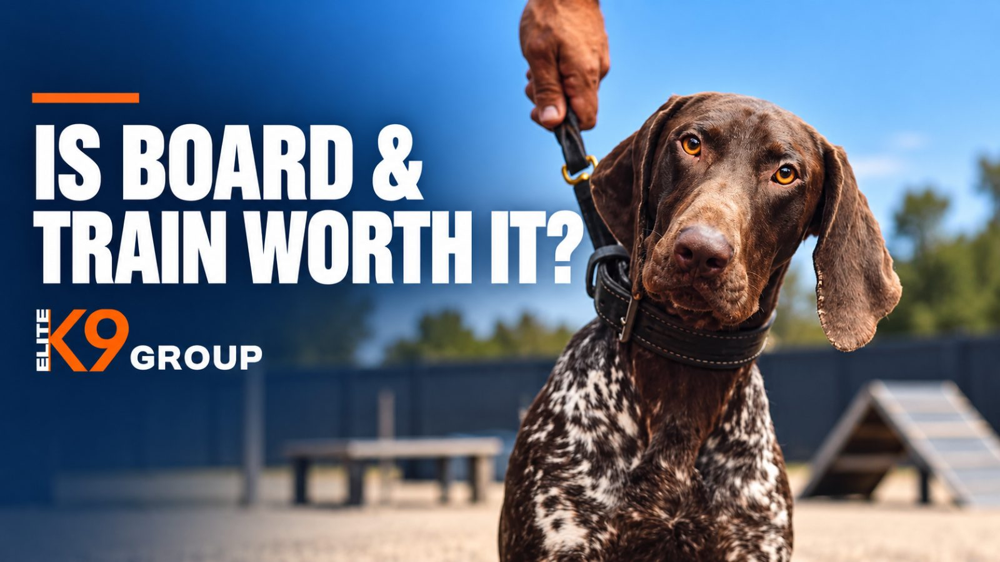

Elite K9 Group offers board and train dog training for owners who want to build stronger obedience, improve everyday behavior, and give their dogs the benefit of structured professional instruction. But how do you know when it's time to consider a residential training program instead of continuing with lessons or home practice? Maybe your dog listens perfectly in the living room but ignores commands outside. Perhaps walks have become a constant struggle, or you've spent months trying to establish better habits without seeing consistent progress. These challenges can leave owners wondering: *Is board and train worth it? For many dogs, a well-structured program can provide valuable training opportunities, especially when paired with owner education and continued practice at home. However, the right choice depends on your dog's needs, the training methods used, and the goals you want to achieve. In this guide, we'll explore when board and train makes sense, how it works, what to expect, and why professional training may be a worthwhile investment in your dog's development. ##What Is Board and Train Dog Training? Board and train is a professional dog training program in which your dog stays temporarily with a trainer or at a training facility while participating in structured instruction. Instead of attending occasional lessons, your dog receives training during a residential stay, with opportunities to develop and practice skills under professional supervision. Depending on the program and your dog's individual needs, training may focus on basic obedience, leash manners, attention, recall, impulse control, and everyday behavior. A board and train program can be particularly appealing to owners who want a focused training environment and professional guidance for behaviors they have struggled to address consistently. However, the goal shouldn't be to send your dog away and expect it to return permanently trained. A successful program should also prepare you to understand your dog's new skills and maintain appropriate routines after training. The value of board and train lies in both professional instruction and the owner's ability to continue that progress at home. ##7 Signs Your Dog May Benefit From Board and Train Not every dog needs residential training, but certain situations make it worth considering. ###1.Your Dog Knows Commands but Doesn't Listen Consistently Your dog sits when asked at home, but what happens when someone rings the doorbell? Does it still respond when another dog walks past? Can you call it back when something exciting catches its attention? Many dogs develop basic obedience skills in familiar environments but struggle when distractions increase. Board and train dog training can provide structured practice to strengthen these foundations and gradually introduce more challenging situations. At Elite K9 Group, our professional obedience training emphasizes clear communication, attention, and command response. For owners who want to move beyond occasional cooperation toward more dependable everyday behavior, a professional evaluation can help determine whether a board-and-train arrangement is suitable. ###2.Walking Your Dog Has Become Difficult A dog that constantly pulls on the leash can make everyday walks exhausting. Some dogs rush toward interesting smells, people, or other animals. Others simply haven't learned to maintain a comfortable walking pace with their owner. In a structured training program, trainers can work on leash manners, engagement, and responding to cues in appropriate environments. These skills can then be practiced by the owner after the dog returns home. If leash pulling is your dog's main challenge, our article on how to stop a dog pulling on the leash explains the causes and foundations of better walking behavior. When consistent home practice hasn't produced the progress you need, professional training may be worth considering. ###3.Your Dog Gets Overwhelmed by Everyday Distractions Some dogs have difficulty concentrating around unfamiliar environments, visitors, movement, or exciting activities. A dog may become so interested in its surroundings that familiar commands seem to disappear. Professional training can help develop attention and self-control, with distractions introduced at a level the dog can manage. However, strong reactions caused by fear or anxiety may require behavioral assessment rather than ordinary obedience instruction alone. Understanding the difference is important when choosing a training program. ###4.You Struggle to Maintain a Consistent Training Routine Training requires repetition, patience, and consistency. For owners managing work, family responsibilities, and other commitments, maintaining an effective routine can be challenging. A board and train program may provide a more structured environment in which a professional can establish and practice foundational skills. This doesn't mean that busy owners can permanently hand over responsibility for their dog's behavior. Once the dog returns home, regular practice and clear expectations remain essential. The benefit is that an experienced trainer can help build the foundation, while the owner learns how to maintain it. ###5.Your Dog Has Developed Difficult Everyday Habits Jumping on guests, ignoring recall, rushing through doorways, or struggling to settle can make life with a dog less enjoyable. Some of these behaviors develop because a dog hasn't yet learned what is expected in particular situations. Board and train may help when those issues are suitable for structured obedience training. The most useful approach is to identify the specific behaviors that need improvement rather than expecting a general program to solve every concern automatically. A professional evaluation can help establish realistic goals and determine whether residential training, private lessons, or another option is appropriate. ###6.You Want to Build Stronger Obedience Foundations Early Board and train isn't only for adult dogs with established habits. Some puppies and adolescent dogs may benefit from an age-appropriate program focused on foundational obedience, positive learning experiences, and everyday manners. Early training can help owners establish better routines before undesirable behaviors become more difficult to manage. However, young dogs have specific developmental, social, and welfare needs. A puppy's suitability for boarding should be considered individually, including age, health, vaccinations, comfort with separation, and the quality of the program. At Elite K9 Group, we also offer puppy training options designed to support early learning and development. A consultation can help determine which training arrangement best fits your puppy's needs. ###7.You Want Professional Help Establishing Long-Term Training Goals Some owners aren't dealing with one serious problem. They simply want a better-trained, more responsive companion. Perhaps you're looking for improved leash manners, more reliable recall, greater attention around distractions, and stronger overall communication. Professional board and train can offer a structured foundation for working toward those goals. But training should be viewed as an ongoing process, not a one-time purchase that guarantees perfect behavior. The most important question is whether the program's training objectives fit your dog and your expectations. ##Does Board and Train Work? Yes, board and train programs can help dogs learn and strengthen obedience skills when training is appropriate, humane, and consistently reinforced. A residential program can provide structured learning opportunities and professional handling that may be difficult for some owners to organize independently. However, the fact that a dog performs well with a trainer doesn't automatically mean it will respond identically at home. Dogs learn in specific environments and relationships. A skill practiced successfully in one location may need additional practice before it becomes reliable elsewhere. That's why owner involvement matters so much. The American Society for the Prevention of Cruelty to Animals (ASPCA) emphasizes the importance of teaching owners how to maintain behavior learned during board and train. A worthwhile program should therefore include a clear explanation of the training methods, realistic objectives, and appropriate guidance for continuing the work at home. Board and train works best as a partnership between the professional trainer, the dog, and the owner. ##Is Board and Train Better Than Private Dog Training? Both board and train and private lessons can be effective. The better option depends on what your dog needs and how you prefer to participate. ###Board and Train Programs Residential training may be useful when a dog would benefit from a structured learning environment and professional work on several related obedience goals. It can also appeal to owners seeking a more concentrated period of training. The main consideration is that the owner must still learn how to use the skills and maintain progress when the dog comes home. ###Private Dog Training Lessons Private lessons allow the owner to participate directly throughout the process. This can be particularly useful when the problem occurs in the home environment or when owner handling is a major part of the challenge. Private training may also be preferable for dogs that are uncomfortable staying away from home. ###Which Option Should You Choose? Rather than assuming that one method is always better, consider your dog's temperament, behavioral history, learning goals, and comfort in unfamiliar environments. At Elite K9 Group, we believe that understanding the individual dog's training needs is the right starting point. Our professional dog obedience training focuses on communication, leash manners, and improving responses to commands. If you're unsure whether board and train or another training arrangement would be more appropriate, discussing your goals with our team can help you make a more informed decision. ##Why Professional Board and Train Dog Training Can Be Worth the Investment One of the biggest advantages of professional training is the opportunity to work with people who understand canine learning and can evaluate the behavior in front of them. When owners attempt to address several training challenges independently, progress may become inconsistent. Different family members might use different commands, expectations may change, or the dog may repeatedly practice behaviors the owner is trying to improve. Professional guidance can help bring more structure and clarity to the process. ###Individual Assessment Instead of Guesswork A useful training plan starts by understanding what your dog can already do, where it struggles, and what you want to improve. At Elite K9 Group, our training approach begins with an evaluation of the individual dog. That allows us to discuss suitable training goals rather than treating every dog as if it needs exactly the same program. ###Focused Attention on Essential Skills A structured program can create opportunities to practice obedience, leash manners, and attention across different situations. The training approach should progress according to the dog's learning needs rather than forcing difficult situations too quickly. ###Professional Guidance for the Owner Even a well-trained dog needs an owner who understands how to reinforce appropriate behavior. Owner instruction matters because consistency after the residential stay influences how well the training carries over into everyday life. Our team recognizes the importance of helping owners understand how to maintain their dogs' progress. ###A Foundation for Better Everyday Life The purpose of dog training is not merely to demonstrate commands during a lesson. It's to help owners and dogs communicate more clearly in ordinary situations. Being able to enjoy walks, invite guests over, or manage daily routines with greater confidence can make professional training a valuable investment. ##When Board and Train May Not Be the Right Choice Board and train isn't automatically suitable for every dog. Dogs experiencing significant separation-related distress may struggle with a residential stay. For these animals, the training environment itself may create additional stress. Serious aggression, resource guarding, intense fear, or other complex behavior problems also require careful evaluation. Some dogs may need a veterinarian, veterinary behaviorist, or appropriately qualified behavior professional before a residential program can be considered. Likewise, if a dog's main difficulty involves interactions with a particular family member or a specific home environment, private training may be especially useful. A responsible training decision should prioritize the dog's welfare and actual needs. At Elite K9 Group, a consultation gives owners an opportunity to explain their concerns and discuss which available training options may be appropriate. ##How Much Does Board and Train Cost? Board and train costs vary depending on the provider, the length of the stay, training objectives, and the services included. A program focused on foundational obedience may have different requirements from one addressing more advanced skills. When comparing costs, consider more than the initial fee. Ask what training is included, how long the residential stay lasts, what care arrangements are provided, whether owner instruction is included, and what follow-up support is available. A lower-priced program is not necessarily better value if it doesn't address your dog's needs or help you maintain progress. Elite K9 Group offers different professional training options, and pricing depends on the program. For current board and train availability, suitability, and pricing, you can contact our team through a free training consultation. ##What Should You Ask Before Enrolling Your Dog in Board and Train? Before choosing a residential training program, make sure you understand both the training and the care your dog will receive. Important questions include: What skills will my dog work on during the program? Which training methods and equipment will be used? Where will my dog stay, and what does a typical day look like? How will my dog's health, safety, and individual needs be managed? How will I receive updates about progress? What owner instruction is provided before my dog returns home? What should I practice after training? What results are realistic for my particular dog? Clear answers can help you evaluate whether the program is transparent and appropriate for your dog. You should feel comfortable discussing any concerns about training methods, supervision, and your dog's welfare before making a commitment. ##What Happens After Your Dog Comes Home? One of the most important parts of any board and train program begins after the residential stay. Your dog may have learned new commands, improved its leash manners, or developed better responses during training, but those skills still need to transfer into everyday life with you. The owner should understand the cues being used, how to reward appropriate responses, and how to practice without overwhelming the dog. Family members should also aim to maintain consistent expectations. For example, if a dog has been learning better leash manners, returning to walks where pulling is repeatedly allowed may make it harder to maintain progress. Continued practice helps strengthen the connection between professional training and daily routines. This is why owner coaching and clear communication are important considerations when choosing board and train. The objective isn't simply to bring home a dog that listens to a trainer. It's to build better communication between you and your dog. ##Frequently Asked Questions About Board and Train ###Is Board and Train Worth It for a Dog That Doesn't Listen? It can be. Dogs that struggle with basic commands, leash manners, or attention may benefit from structured professional instruction. However, the value depends on the underlying problem, the quality of the program, and the owner's participation afterward. A professional evaluation can help determine whether residential training is appropriate. ###Does Board and Train Work for Older Dogs? Yes, adult and older dogs can learn new skills. Established habits may require additional practice, and training should account for the dog's health and physical abilities. Age alone does not determine whether board and train will be successful. ###Are Board and Train Programs Worth It for Puppies? Yes, board and train programs can be a valuable investment in a puppy's early development. Structured professional training helps puppies build essential obedience skills, develop good manners, and gain positive social experiences from an early age. At Elite K9 Group, our puppy board and train program focuses on foundational obedience, individualized training, and helping owners maintain progress at home. Starting with appropriate professional guidance can help establish good habits before unwanted behaviors become more difficult to manage. Our team can evaluate your puppy's age, development, and individual needs to determine the most suitable training option. ###How Long Does Board and Train Take? Program duration varies by provider and the individual dog's training objectives. Some dogs may need more foundational work, while others have goals requiring additional practice. Ask the trainer what the proposed schedule includes and what you should realistically expect by the end. ###Will My Dog Remember Its Training After Board and Train? Dogs can retain learned skills, but continued practice is important. Training should be reinforced in the environments where those skills are needed. Owner instruction and consistent routines help maintain progress after the dog returns home. ###Can Board and Train Fix Aggression? A residential program is not automatically appropriate for aggression. Aggression can involve fear, pain, guarding, and other factors that require individualized evaluation. Severe or high-risk cases may require veterinary and specialist behavioral involvement. No responsible program should guarantee that aggression will be permanently eliminated. ###Is Board and Train Better Than Training My Dog Myself? While many owners successfully teach their dogs basic commands at home, professional board and train programs offer the advantage of structured instruction, consistent practice, and experienced trainers who can identify individual learning needs. For dogs struggling with obedience, leash manners, or everyday distractions, board and train can provide a valuable foundation that may be difficult to establish through occasional home practice alone. At Elite K9 Group, we focus on professional training that helps dogs develop important skills while guiding owners on how to maintain progress after their dogs return home. The right program depends on your dog's needs, which is why we recommend starting with an individual evaluation. ##Consider Professional Board and Train With Elite K9 Group Imagine enjoying walks without constant pulling, welcoming guests without unnecessary jumping, and having a dog that responds more consistently to your commands. These are some of the everyday improvements that structured professional training can help owners work toward. At Elite K9 Group, we offer professional board-and-train obedience programs designed to help dogs build essential skills, improve communication, and develop better everyday manners. Whether your dog needs stronger obedience foundations, better leash manners, improved attention, or more consistent behavior around distractions, our team can help you explore an appropriate training approach. We understand that every dog has different training needs. That's why our process begins with evaluating your dog and discussing the goals you want to achieve. Choosing professional board and train is an investment in your dog's education and your relationship together. With appropriate training and continued practice at home, the skills developed during the program can support better communication and more manageable everyday routines. Visit Elite K9 Group: 13238 Riverside Dr, Sherman Oaks, CA 91423. You can also follow Elite K9 Group on Instagram for training content and updates from our team. Ready to explore professional board and train for your dog?* Book Your Free Behavior Consultation to discuss your dog's needs, learn about available training options, and find out whether bringing your dog to Elite K9 Group is the right choice.
